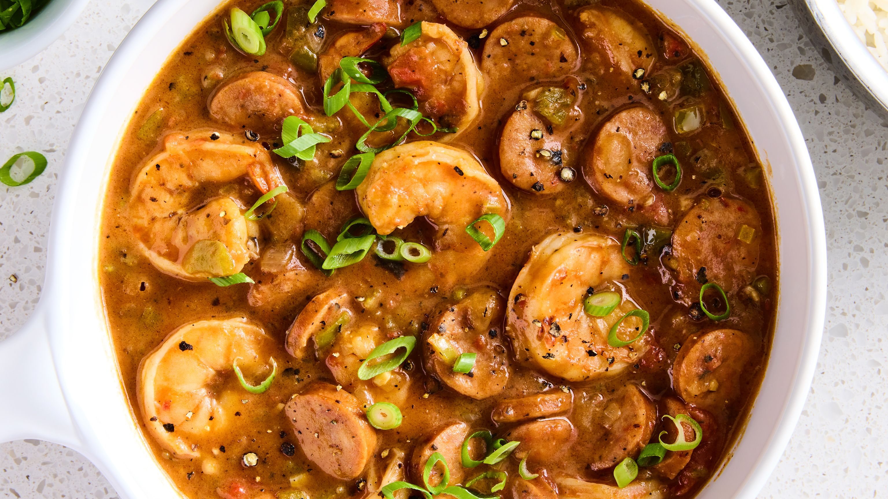

Gumbo Recipe

Description
Gumbo is a New Orleans stew that is thickened with roux, and commonly made with chicken, sausage, or seafood. It also includes vegetables like tomatoes and okra.
Fundamental to a good gumbo is the "holy trinity", which consists of peppers, onions, and garlic.
Ingredients
- 1 cup all-purpose flour
- 2/3 cup oil (vegetable or cancola)
- 1 bunch celery, diced
- 1 green bell pepper, diced
- 1 large yellow onion, diced
- 1 bunch fresh chopped parsley, finely chopped
- 2-3 cloves garlic
- 1-2 tablespoons cajun seasoning
- 6-8 cups chicken broth
- 12 oz. package andouille sausage, sliced into coins
- meat from 1 rotisserie chicken
- 2 cups shrimp, pre-cooked
- hot cooked rice for serving
Steps
- Make the Roux: In a large, heavy bottom stock pot combine flour and oil. Cook on medium-low heat, stirring constantly for 30-45 minutes. This part takes patience--when it's finished it should be as dark as chocolate and have a soft, "cookie dough" like consistency. Be careful not to let it burn! Feel free to add a little more flour or oil as needed to reach this consistency.
- Brown the sausage. In a separate skillet on medium-high heat place the sausage slices in one layer in the pan. Brown them well on one side (2-3 minutes) and then use a fork to flip each over onto the other side to brown. Remove to a plate.
- Cook the vegetables in broth. Add ½ cup of the chicken broth to the hot skillet that had the sausage to deglaze the pan. Pour the broth and drippings into your large soup pot.
- Add remaining 5 ½ cups of chicken broth. Add veggies, parsley, garlic and roux to the pot and stir well.
- Bring to a boil over medium heat and boil for 5-7 minutes, or until the vegetables are slightly tender. (Skim off any foam that may rise to the top of the pot.) Stir in cajun seasoning, to taste.
- Add meat. Add chicken, sausage, and shrimp.
- Taste and serve. At this point taste it and add more seasonings to your liking--salt, pepper, chicken bullion paste, garlic, more Joe's stuff or more chicken broth--until you reach the perfect flavor. Serve warm over rice. (Tastes even better the next day!)